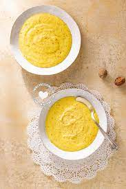

Harina De Maiz

Description
A sweet cornmeal dish
- 2 cups Harina De Maiz
- 5 cups Milk
- 1 1/2 cups Sugar
- 2 tablespoons Salt
- Mix the salt, sugar, and milk in a pan while over medium
- As the mixture comes to a boil add in the Harina while stirring continuously
- Continue stirring for 5-10 minutes as the mixture starts to become heavier and comes to a boil
- Serve in a bowl and Enjoy!